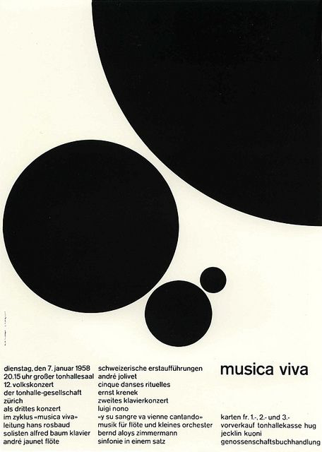
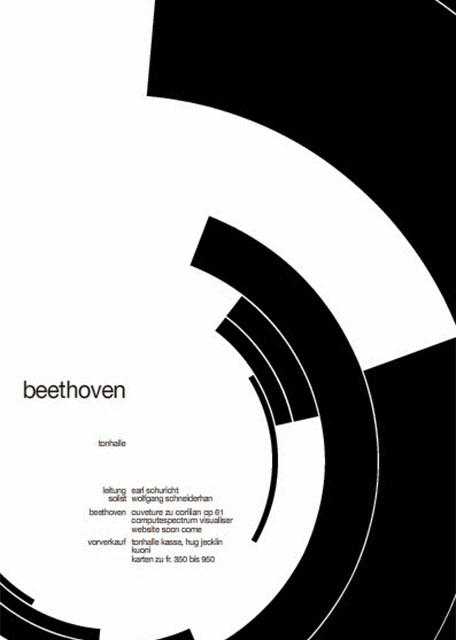
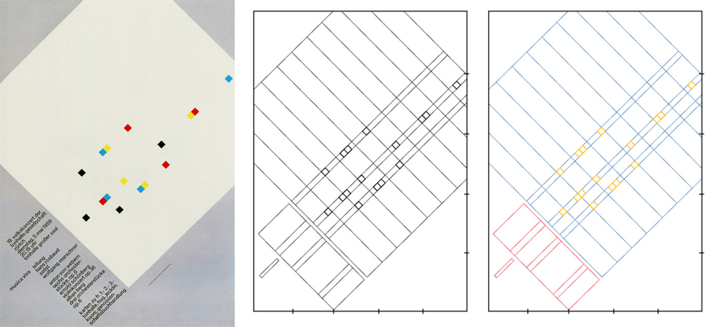
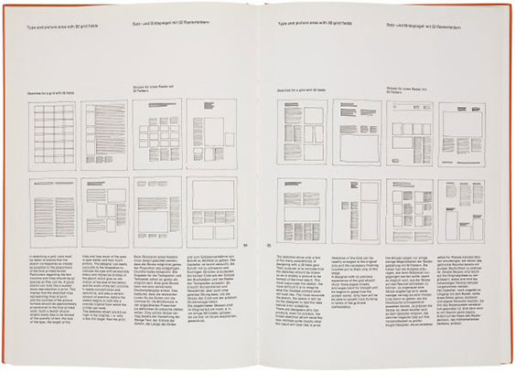

Josef Müller-Brockmann was a Swizz born graphic artist and a participant of the 'Swiss International Style'. In his early school years his obsession for graphic design became quickly apparent after he accidently discovered his artistic ingenuity by an impressed teacher that consulted him about his skills. This would lead him on to explore his hiddenly acquired artistic skill with Josef becoming an apprentice retoucher in a printing house. Although, for only one day as he believed it wasn’t artistic enough. After this however, a man named Alex Walter Diggelmann who owned a small successful studio in Zurich offered him an apprenticeship. Taking up the offer, Müller-Brockmann would go on to learn a lot about typography and minimalistic design during his time at the studio.
After questioning many other local artists on their place of study, Müller-Brockmann enrolled at the highly prestige Zurich School of Arts and Crafts where he would specialize in design, art history and architecture.
By 1934 he opened his own graphic & illustration studio in Zurich as a freelancer, eventually he would be joined by collaborators. Two years later he would become a member of the Swiss Werkbund and the following year design the ‘pavilion of honor’ for the Swiss universities ‘Physics and Medicine’ and ‘History of Swiss Art’ sections for the 1939 National Fair.
In the 1950s Josef Müller-Brockmann designed his first poster for the Tonhalle in Zurich for a concert being held. At this time Josef developed an interest in constructivism and deploying it in his art. Eventually, he was influenced by the ideas of major different design and art movements at that time including De Stijl, Suprematism, constructivism and the Bauhaus.
Using his collective skills, Brockmann often used sporadically aligned yet an asymmetrical layout which layered his work containing his goal of “graphic purity”. He would also proportionally and mathematically space his designs out while containing a rhythmic sense of harmony.


His work quickly became established in Swiss Culture and soon enough he would become the founder and prominent editor of the popular magazine “Neue Grafik” (New Graphic Design) which would spread the principles of Swiss design to America then eventually the world.
Josef was not a man of written work; however, he did specialize in sans-serif typography believing his use of typography expressed the progressing modern age and best way to structure information. He favored ‘Akzidenz Grotesk’ as its balanced geometric consistency instilled a sense of simplicity, relevancy and understanding of the written text. Josef’s use of type was always direct and clear, when criticizing Neville Brody’s work, he said
Some have set themselves the task of making typography unreadable, of making a puzzle out of it. Illegibility seems to become an artistic project. I don't want to read things like that. The same rational criterion applies to wobbly shapes and fuzzy contours: Can I read these messages faster? No! No! Fonts designed for Neville Brody are not suitable for advertisements and posters. They are exceptions and individual cases should not be the basis for teaching graphics. These alphabets are confused, unattractive and simply bad.
-Josef Müller-Brockmann
For this reason, he chose Akzidenz Grotesk over its successors such as Helvetica or Univers mentioning that the typeface is “more expressive and the formal foundations are universal”.
As Josef Müller was known to have a universal mindset, he sought to use typography on a global scale and despised decorative elements that would create chaos and confusion, in an eyemagazine interview, he explained
Our western typefaces are based on the universal shapes of circle, square and triangle. That makes them rational and objective and gives them an elegance that is recognisable by all cultures.
-Josef Müller-Brockmann
Josef Müller-Brockmann also created various books such as ‘Gestaltungsprobleme des Grafikers’, 1961, which translates to “Design problems with artistic design”. In this book he would do exactly that by solving problems and finding the appropriate contemporary form. In his book he would talk about the method, meaning and effect of his illustrative work in the advertising industry, such as brochures, posters, exhibitions, etc. In the last section of his book the systematic education of the graphic designer is presented by a means of comprehensive documentation. This created a new standard of work that still serves as an historic pragmatic and universal guide even to this day, allowing graphic designers a valuable self-survey of the fundamental tasks of design. As seen in his book Josef Müller believed heavily on critiquing his own work in order to successfully understand and advance. He heavily encouraged others to do the same as in an eyemagazine interview he tells us, “I would advise young people to look at everything they encounter in a critical light … Then I would urge them at all times to be self-critical.”


His other book, ‘Grid Systems in Graphic Design’ which is what he’s most famously known for, he focuses into the structure and layout of graphic design creating order and clarity by organizing elements into a gridded structure and or by Josef’s words “a grid system creates a sense of compact planning, intelligibility and clarity, and suggests orderliness of design.” Josef Müller would also heavily promote the typographic style grid which consisted of multiple intersecting vertical and horizontal grid lines with elements consisting inside them. This would become the standardized method of grid to this day firstly spreading its influence in Europe then later America. From this, Joseph Müller-Brockmann, the Swiss graphic designer created a universally used graphic expression by employing a grid-based design exclusive of subjective feeling and extraneous illustration.
Josef Müller-Brockmann refused the use of decorative elements in his design as he saw it too defining, instead, he focused on the use of communication to the viewer in all areas of his design. He believed in the organization of design and that would serve a purpose such as seen in his grids.
Brockman theorized that his work is of mental unconsciousness, in an eyemagazine interview he explains,
The unconscious is part of the support structure. Everything that is stored there comes to light in the work process. What I try to achieve in my work is to communicate information about an idea, event or product as clearly as possible.
-Josef Müller-Brockmann
He communicated information about an idea, event or product as vividly as possible to retain a sense of one's own neutral interpretation of the subject.
In fact, he mentions that his work is not intended to make a timeless statement rather to invite his audience to form their own opinion on the subject being visually presented.
Throughout the course of history, humans have shared concepts and ideas with each other to advance in their areas of profession. For design this is no different. Josef was influenced by a diverse range of movements to form and optimize his work to express to the world. Josef Müller was able to revive the ‘typographic style grid’ which can be seen in many products today such as the Adobe brand which includes this feature in many of their products such as photoshop and illustrator. Josef also set new laws of communication and organization through his design and in-depth studies including the several books and a magazine that he published.
Josef Müller-Brockmann was a man who never worked outside of Switzerland yet believed in spreading his ideas on a universal scale which he accomplished. His global mindset allowed him to acknowledge the differences and also the similarities of cultures around the world to know what common geometrical knowledge each culture shares with one another to create common typefaces which can be universally recognized. I believe without a doubt Josef Müller-Brockmann’s groundbreaking standards have revolutionized the course of design in the 20th century with it holding even more relevancy today as it did back then, especially with the arrival of the internet.
As we are in the 21st century, Josef Müller’s universal thinking and futureproofing ideas are genius, and his principles could not be evermore relevant with society than before as the arrival of globalization and the internet as it has opened a brand-new spectrum of design including website/UX design all on a multitude of devices.
From becoming a European design consultant at IBM and designing his own firm (Muller-Brockmann & Co) to having his work on display at multiple museums in multiple countries shows a few more ways of how Josef spread his influence globally. Josef is considerably one of the most influential and groundbreaking graphic design figures of all time. He was able to spread his ideas, beliefs and designs across continents and beyond.